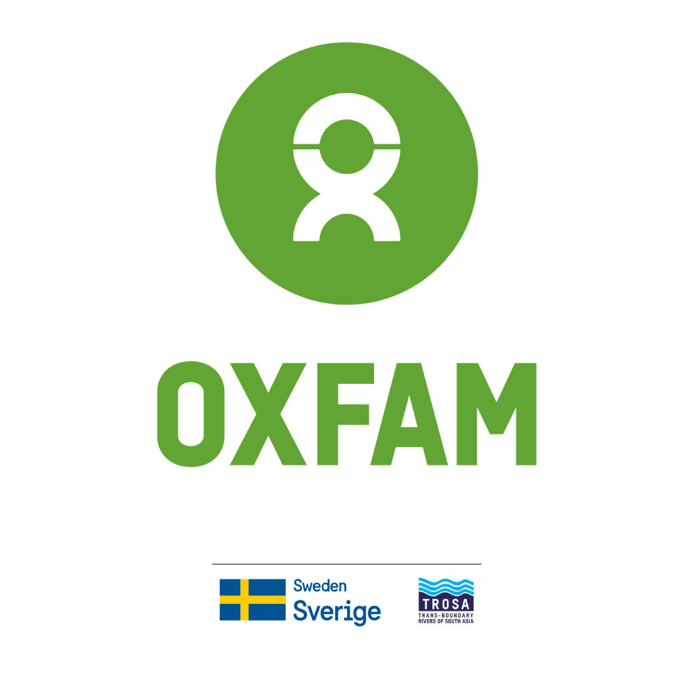
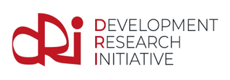
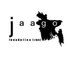
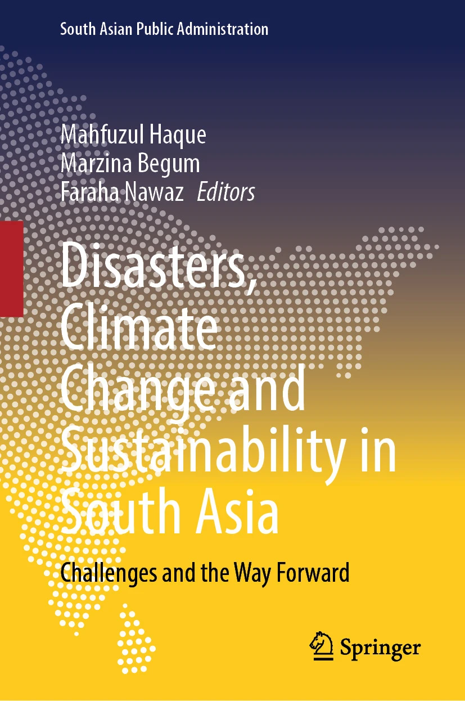
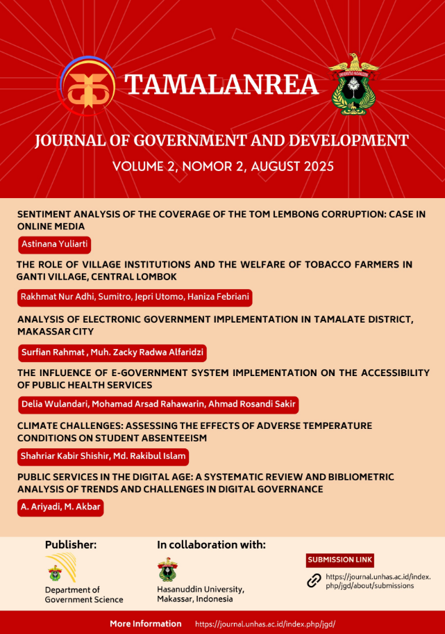

Leadership
Research Professional
Shahriar Kabir Shishir
Research Professional
Research professional with hands-on experience leading research projects across governance, migration, climate resilience, and public health in Bangladesh and South Asia. Skilled in research design, proposal development, tool development, field supervision, data analysis, and report writing, with a track record of securing competitive research grants and co-authoring peer-reviewed publications.

Research
6+
Research Projects
3
Funded Projects
2
Published Outputs
15
Organizations
At a Glance
Conference
Panelist at IYC 2025, Nepal
Discussed “Tools for Transboundary Cooperation”.
Training
Developed Training Manuals & Trained Master Trainers
Across multiple training and civic-engagement projects.
Research support
Research Assistant across Multiple Projects
Experience spanning research-tool development, field management, data analysis and report writing.
Organizations & Collaborations
View All Collaborations




Funded Research Projects
Supply Chain of Smokeless Tobacco in Rural Bangladesh: Gaps in Regulation and Policy Needs
Funded research grant of USD 5,000 led through BCCP. The project focuses on smokeless tobacco supply chains in rural Bangladesh and the regulatory and policy gaps that require evidence-based reform.
View ProjectExploring the Current Landscape of Post-River Erosion Land Reclamation Patterns within Riparian Communities
Externally funded research undertaken with Oxfam Bangladesh under TROSA Phase 2, focused on river erosion, riparian communities, land reclamation, environmental sustainability, and community resilience.
View ProjectClimate Challenges: Assessing the Effects of Adverse Temperature Conditions on Student Absenteeism
School-level research funded through the Research & Extension Centre, JKKNIU, examining adverse temperature conditions and recommendations to address temperature-induced student absenteeism.
View ProjectRecent Publications

Patterns of Post-River Erosion Land Reclamation: A Study on the Riparian Communities in Bangladesh
Published in Springer Nature. DOI: 10.1007/978-3-032-04750-2_6
View Publication
Climate Challenges: Assessing the Effects of Adverse Temperature Conditions on Student Absenteeism
Published in Tamalanrea: Journal of Government and Development. DOI: 10.69816/jgd.v2i2.46039
View PublicationExperience
2025
Research and development leadership
Research and development experience spanning funded research leadership, field research, methodology and tool development, data analysis, field supervision, policy-oriented research, and research support across Bangladesh.
Training
2023–2024
Training and facilitation
Training experience in peace and tolerance, civic engagement, climate change and elections, and mental health, including facilitator development and master-trainer preparation.
Engagement
2024–2025
Conference participation
International and national conference participation, including panel participation at IYC 2025 in Nepal and volunteering at the 3rd International Conference on Humanities and Social Sciences at JKKNIU.